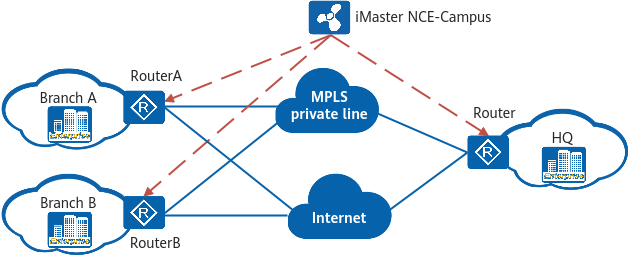

Branch Interconnection in the SD-WAN Solution
In Figure 1, the Router functions as the gateway at the headquarters (HQ) of a small- and medium-sized enterprise (SME), while RouterA and RouterB function as gateways at branches. The SD-WAN Solution can be deployed to connect branches to the HQ.
- Branches can connect to the HQ through multiple types of physical links, such as MPLS private lines and Internet links.
- The solution also supports unified, visualized O&M on iMaster NCE-Campus.
- ARs provide extensive SD-WAN features such as intelligent application identification and intelligent traffic steering to deliver better service experience to enterprises.
Figure 1 Branch interconnection in the SD-WAN Solution